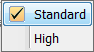

Acquire Tab - C-DiGit® Blot Scanner
The Acquire tab contains
controls for acquiring a new image with the
C-DiGit instrument.
Setup
Use the Analysis Type list in the Setup group to specify the type of analysis to perform when an acquisition completes. You can also choose No Analysis.
in the Setup group to specify the type of analysis to perform when an acquisition completes. You can also choose No Analysis.
If an analysis type is selected, the analysis automatically starts when the acquisition is complete. The previous analysis will be used unless a different analysis is chosen.
No Analysis: To analyze data manually, select No Analysis from the Analysis Type list. When the acquisition completes, click the Analysis tab and choose an Analysis Type from the Analysis Type list in the Type group. Select Manual if you want to manually add shapes (the Image Studio Lane background method is unavailable when using a Manual analysis).
NOTE: The Analysis Type choices may require the installation of separate Keys (see Application menu for information about Importing Keys).
Image Table Info
To enter values for user-editable columns in the Images Table:
-
Click Image Table Info
 in the Setup group.
in the Setup group.The Image Table Information dialog will open.

- In the Image Table Information dialog, enter values in any available field.
- Click OK. The values you entered will be saved to the Images Table for the acquisition.

{kind=link}
Sensitivity
Click Sensitivity and select Standard or High from the list.

Scanner
Click Start in the Scanner group to start the acquisition.
The scanner acquires an image using the currently displayed parameter values. The status of the acquisition is displayed in the Status group. The acquisition is listed in the Images Table. While the acquisition is collected, the image is displayed in the View area.
NOTE: To stop the acquisition before it has completed, press Cancel in the Scanner group. The acquisition is discarded.